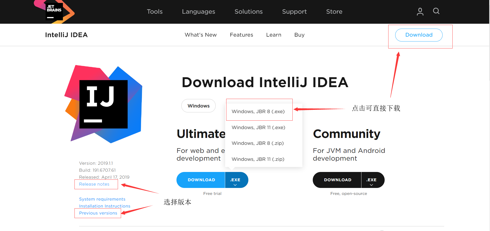
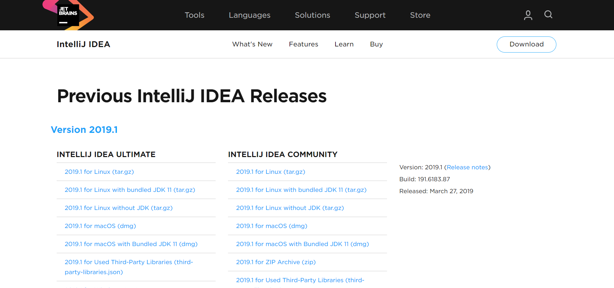
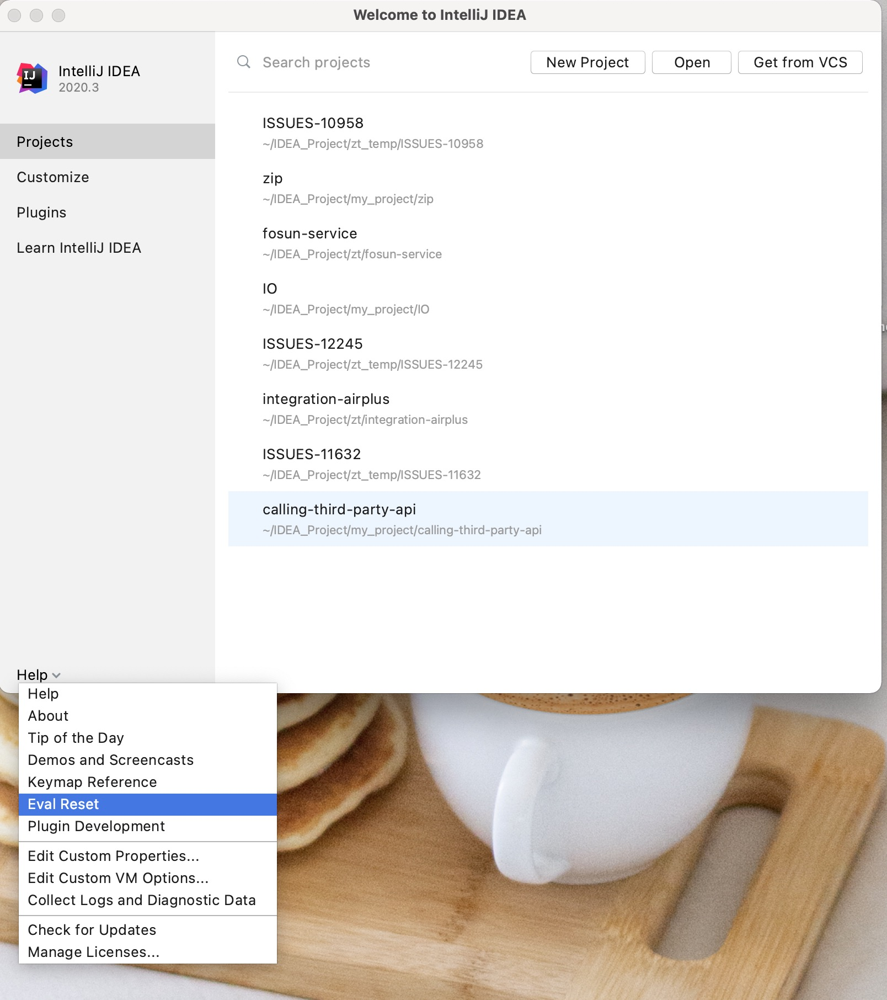
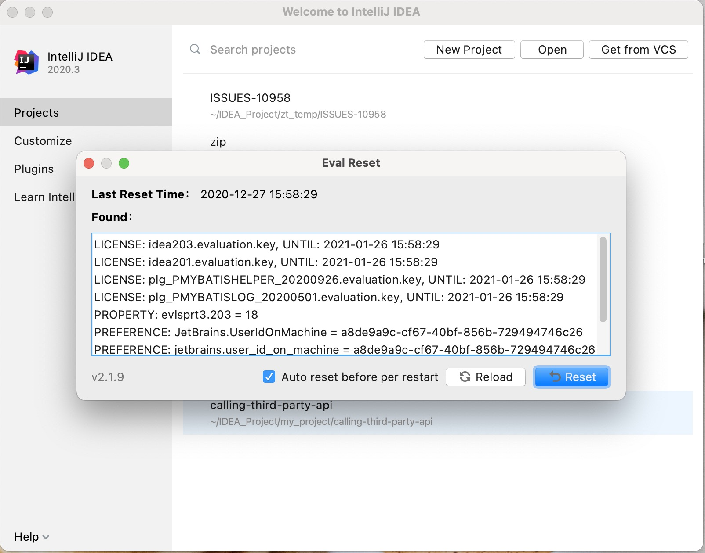
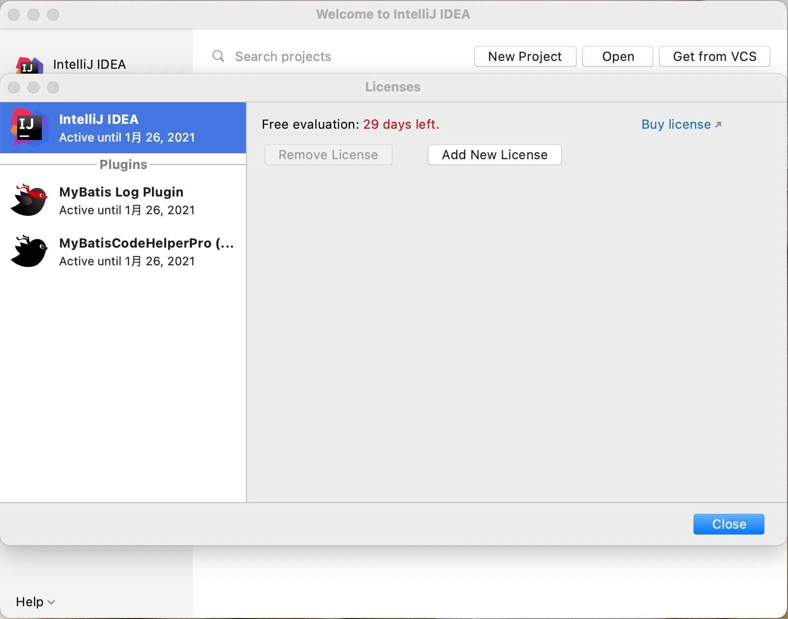

在官网下载
https://www.jetbrains.com/idea/download/#section=windows
这里以 ideaIU-2019.1.1.exe 为例：


下载破解.jar
大神地址：https://zhile.io/ （同时有 Mybatis 插件 MybatisCodeHelperNew-2.5 和 2.6 可下载）
破解方法:
- 先下载压缩包解压后得到 jetbrains-agent.jar，把它放到你认为合适的文件夹内。如果你没有 gitee 账号，你也可以在这里下载：https://zhile.io/2018/08/17/jetbrains-license-server-crack.html
- 启动你的 IDE，如果上来就需要注册，选择：试用（Evaluate for free）进入 IDE
- 点击你要注册的 IDE 菜单：" Configure " 或 " Help " -> " Edit Custom VM Options … "，如果提示是否要创建文件，请点 “是|Yes” 。参考文章：https://intellij-support.jetbrains.com/hc/en-us/articles/206544869
- 在打开的 vmoptions 编辑窗口末行添加：“-javaagent:/absolute/path/to/jetbrains-agent.jar”，一定要自己确认好路径，填错会导致IDE打不开！！！最好使用绝对路径。
示例:
mac: -javaagent:/Users/neo/jetbrains-agent.jar
linux: -javaagent:/home/neo/jetbrains-agent.jar
windows: -javaagent:C:\Users\neo\jetbrains-agent.jar
- 如果还是填错了，参考这篇文章编辑 vmoptions 补救：https://intellij-support.jetbrains.com/hc/en-us/articles/206544519
- 重启你的IDE。
- 点击IDE菜单 " Help " -> " Register… " 或 " Configure " -> " Manage License… "，支持两种注册方式：License server 和 Activation code:
- 选择 License server 方式，地址填入：http://jetbrains-license-server （应该会自动填上），或者点击按钮：" Discover Server "来自动填充地址
- 选择 Activation code 方式离线激活，请使用：ACTIVATION_CODE.txt 内的注册码激活如果注册窗口一直弹出，请去 hosts 文件里移除 jetbrains 相关的项目。如果你需要自定义 License name，请访问：https://zhile.io/custom-license.html
IDEA 初始化参数（idea64.exe.vmoptions）
编写 idea 安装目录 bin 文件夹下的 idea64.exe.vmoptions：
1 | -Xms512m |
Jetbrains 系列产品重置试用方法（破解）
没错 jetbrains-agent 这个项目停止了。市面上漫天飞的各种最新都是其他大神的魔改版本。
项目背景
Jetbrains 家的产品有一个很良心的地方，他会允许你试用30天（这个数字写死在代码里了）以评估是否你真的需要为它而付费。但很多时候会出现一种情况：IDE 并不能按照我们实际的试用时间来计算。举个例子：如果我们开始了试用，然后媳妇生孩子要你回去陪产！陪产时我们并无空闲对 IDE 试用评估，它依旧算试用时间。（只是举个例子，或许你并没有女朋友）发现了吗？你未能真的有30天来对它进行全面的试用评估，你甚至无法作出是否付费的决定。此时你会想要延长试用时间，然而 Jetbrains 并未提供相关功能，该怎么办？
事实上有一款插件可以实现这个功能，你或许可以用它来重置一下试用时间。但切记不要无休止的一直试用，这并不是这个插件的本意！
如何安装
插件市场安装：
- 在
Settings/Preferences... -> Plugins内手动添加第三方插件仓库地址：https://plugins.zhile.io - 搜索：
IDE Eval Reset插件进行安装。如果搜索不到请注意是否做好了上一步？网络是否通畅？ - 插件会提示安装成功。
下载安装：
- 点击这个 链接(v2.1.6) 下载插件的 zip 包（macOS 可能会自动解压，然后把 zip 包丢进回收站）
- 通常可以直接把 zip 包拖进 IDE 的窗口来进行插件的安装。如果无法拖动安装，你可以在
Settings/Preferences... -> Plugins里手动安装插件（Install Plugin From Disk...） - 插件会提示安装成功。
如何使用
-
一般来说，在 IDE 窗口切出去或切回来时（窗口失去/得到焦点）会触发事件，检测是否长时间（25天）没有重置，给通知让你选择。（初次安装因为无法获取上次重置时间，会直接给予提示）
-
也可以手动唤出插件的主界面：
- 如果 IDE 没有打开项目，在 Welcome 界面点击菜单：
Get Help -> Eval Reset - 如果 IDE 打开了项目，点击菜单：
Help -> Eval Reset

- 如果 IDE 没有打开项目，在 Welcome 界面点击菜单：
-
唤出的插件主界面中包含了一些显示信息，2个按钮，1个勾选项：
- 按钮：
Reload用来刷新界面上的显示信息。 - 按钮：
Reset点击会询问是否重置试用信息并重启IDE。选择Yes则执行重置操作并重启 IDE 生效，选择No则什么也不做。（此为手动重置方式） - 勾选项：
Auto reset before per restart如果勾选了，则自勾选后每次重启/退出 IDE 时会自动重置试用信息，你无需做额外的事情。（此为自动重置方式）

- 按钮：
一些说明
-
本插件默认不会显示其主界面，如果你需要，参考本文：如何使用小节。
-
市场付费插件的试用信息也会一并重置。 对于某些付费插件（如: MyBatis Log Plugin, MyBatisCodeHelperPro）来说，你可能需要去取掉javaagent 配置（如果有）后重启IDE：
- 如果 IDE 没有打开项目，在 Welcome 界面点击菜单：
Configure -> Edit Custom VM Options...-> 移除 -javaagent: 开头的行。 - 如果 IDE 打开了项目，点击菜单：
Help -> Edit Custom VM Options...-> 移除 -javaagent: 开头的行。 - 点击菜单：
Help -> Manage Licenses...，可以看到相关付费插件。（亲测，付费插件会一并重置）

- 如果 IDE 没有打开项目，在 Welcome 界面点击菜单：
-
重置需要重启 IDE 生效！
-
重置后并不弹出 Licenses 对话框让你选择输入 License 或试用，这和之前的重置脚本/插件不同（省去这烦人的一步）。
-
如果长达25天不曾有任何重置动作，IDE 会有通知询问你是否进行重置。
-
如果勾选：
Auto reset before per restart重置是静默无感知的。简单来说，勾选了Auto reset before per restart则无需再管，一劳永逸。
If you like this blog or find it useful for you, you are welcome to comment on it. You are also welcome to share this blog, so that more people can participate in it. If the images used in the blog infringe your copyright, please contact the author to delete them. Thank you !